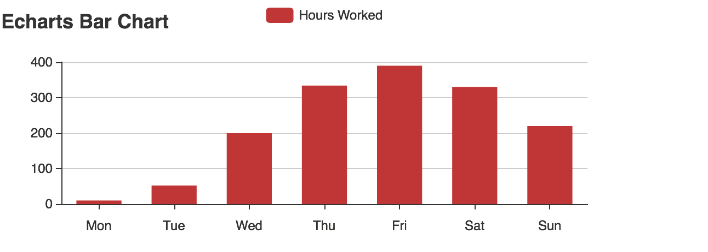
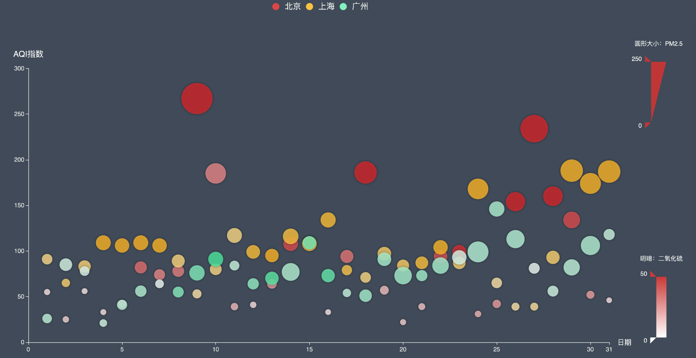

本文描述echart使用情况
echart示例

echart示例2

注意：代码块的三个`是波浪线下面的符号，不是‘
<script type="text/javascript">
$(document).ready(function() {
//为超链接加上target='_blank'属性
$('a[href^="http"]').each(function() {
$(this).attr('target', '_blank');
});
});
</script>
<!DOCTYPE html>
<html>
<head>
<script type="text/javascript" src="http://echarts.baidu.com/gallery/vendors/echarts/echarts-all-3.js"></script>
</head>
<body>
<div id="container" style="width: 600px; height: 250px;"></div>
<script type="text/javascript">
var chart = document.getElementById("container");
var myChart = echarts.init(chart);
var option = {
title: {
text: "Echarts Bar Chart"
},
legend: [
{
data: ["Hours Worked"]
}
],
tooltip: {
trigger: 'axis',
axisPointer: {
type: 'shadow'
}
},
xAxis: [
{
type: 'category',
data: ['Mon', 'Tue', 'Wed', 'Thu', 'Fri', 'Sat', 'Sun'],
axisTick: {
alignWithLabel: true
}
}
],
yAxis: [
{
type: 'value'
}
],
series: [
{
name:'Hours Worked',
type:'bar',
barWidth: '60%',
data: [10, 52, 200, 334, 390, 330, 220]
}
]
};
myChart.setOption(option, true);
</script>
</body>
</html>